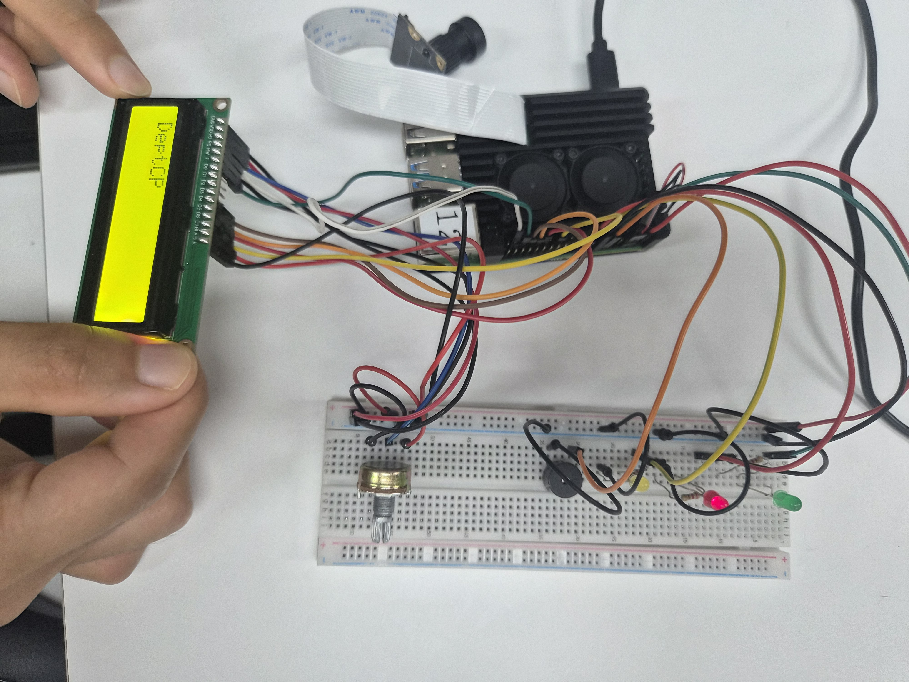
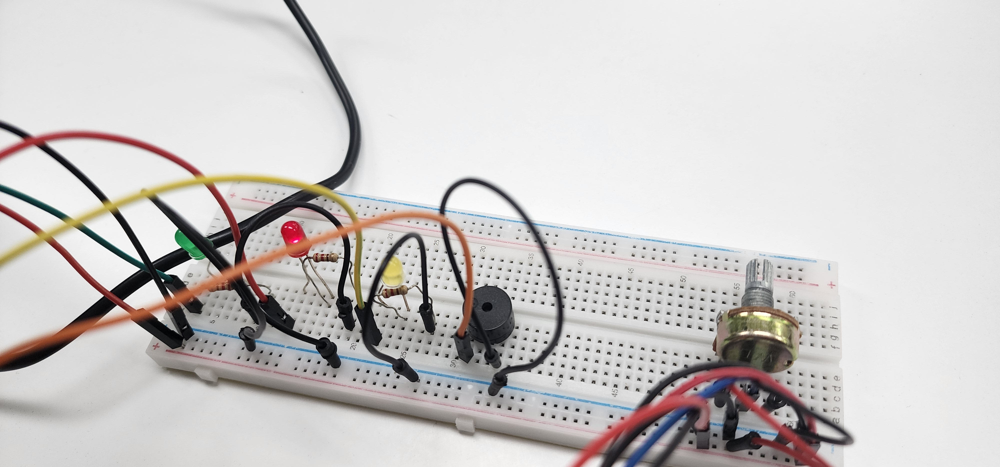
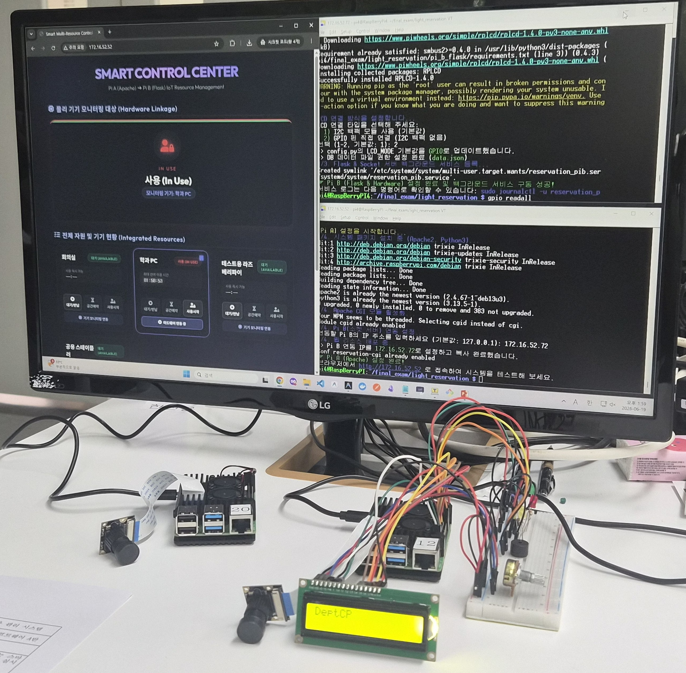
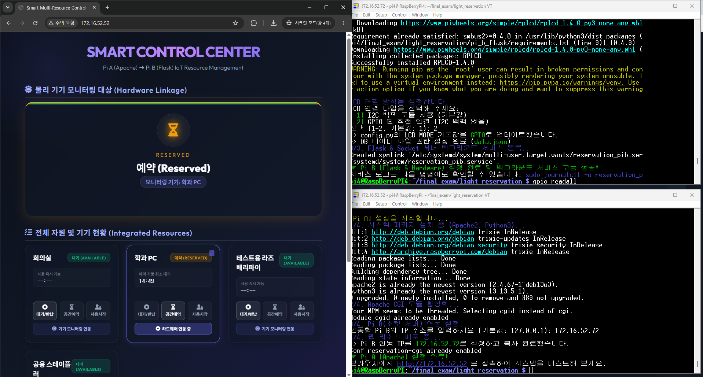
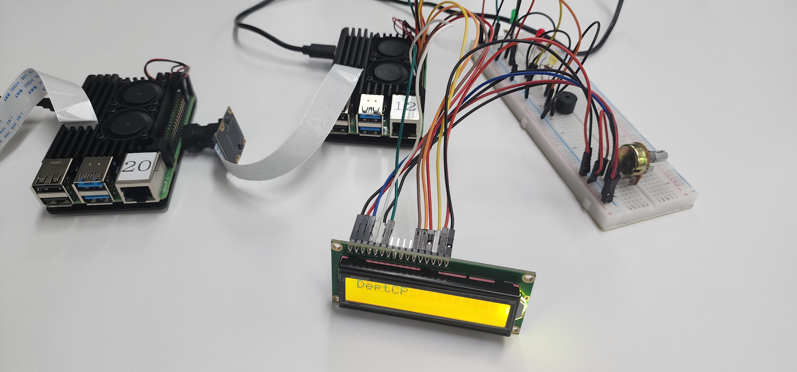

본 프로젝트는 2대의 라즈베리 파이(Pi A와 Pi B)를 유기적으로 연동하여 회의실, 학과 PC, 공유기 등 다양한 공용 자원을 실시간 제어하고, 물리 액추에이터(LED, LCD, Buzzer)를 통해 상태 피드백을 동기화하는 스마트 자원 관리 시스템입니다.


| 수행 항목 (Task Name) | 1주차 (06.04~06.10) | 2주차 (06.11~06.17) | 3주차 (06.18~06.25) |
|---|---|---|---|
| 📋 요구사항 정의 및 기획 |
자원 기획 및 명세 정의
|
||
| ⚡ 회로 설계 및 부품 구성 |
GPIO 회로 배선도 수립
|
||
| 📟 Web & CGI 서버 개발 (Pi A) |
Apache 웹 리소스 & CGI 개발
|
||
| ⚙️ Flask & Socket 개발 (Pi B) |
REST API 및 소켓 리스너 개발
|
||
| 🚨 하드웨어 제어 모듈 코딩 |
LED/LCD/Buzzer 드라이버 구현
|
||
| 🧪 통합 연동 및 디버깅 |
소켓 통신 데이터 검증
|
||
| 🔒 스케줄러 안정화 및 배포 |
데몬 서비스 등록 & setup.sh 제작
|
||



PIN 기반 자율 인증 체계로 무단 취소나 사용 가로채기를 철저히 예방하여 공동체의 불필요한 마찰을 줄이고 이용 신뢰성을 대폭 향상시킵니다.
회의실 같은 커다란 공간에 국한되었던 예약 시스템을 학과 공용 PC, 공유기, 소형 실습 키트 등 미세한 공용 물품 영역까지 손쉽게 확장하여 관리합니다.
백그라운드 스케줄러가 노쇼 건을 스스로 모니터링하여 강제 회수하고 사용 한도를 통제하여, 대기 중이던 사용자들에게 실시간으로 공평한 기회를 보장합니다.
시야를 끄는 LED 신호등과 청각적인 부저 상승/하강음 멜로디 피드백이 조화롭게 작용하여 반납 시간을 정확히 인지하고 규칙을 준수하는 문화를 형성합니다.